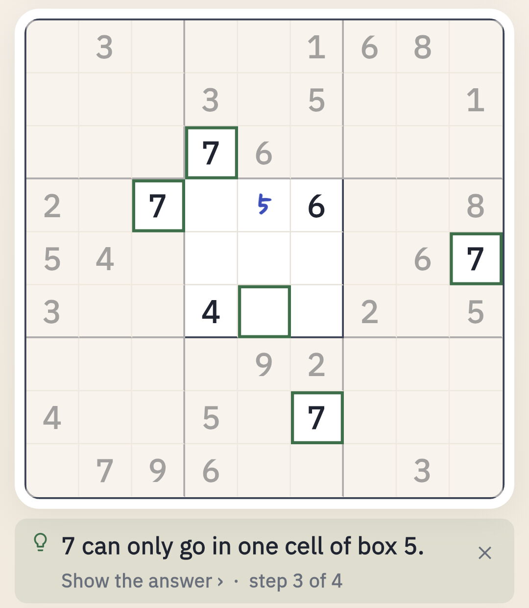

A real puzzle book, on your phone
Six books of puzzles
Beginner, Easy, Medium, Hard, Expert and Sudoku-X (diagonal Sudoku) — 50 pages each, every one checked to have exactly one solution.
A daily Sudoku
A new free puzzle every day, gentle on Monday and tough on Sunday. No streaks: miss a day and it waits for you.
Stamps for solved pages
Each solved page gets a stamp with the date, your time and "no hints" when you did it alone.
Honest difficulty
A built-in solver rates every puzzle by the techniques it needs — not by counting clues.
Hints that teach, not just tell

Stuck? A hint first shows where to look, then which technique works there, then why — and gives the answer only if you ask. You'll learn hidden singles, naked pairs, pointing pairs, X-Wing and Swordfish along the way.
Check my notes finds a pencil mark that removed a number you still need, and Rewind takes you back to the last moment your board was correct.
Large print and easy on the eyes
Large print mode
Bigger numbers, bolder lines and notes only on the cell you're working on.
Eleven looks
From a classic newspaper page to a dark library, chalkboard and e-ink.
Your kind of numbers
Numbers, Roman numerals, letters, Arabic numerals, shapes or colours.
Comfortable input
Pencil marks that clean themselves, number-first input, drag to select, undo and redo.
Offline and private
Every puzzle is stored in the app, so Sudoku Book works on a plane, on the train or anywhere without internet. There is no account and no sign-in; your progress stays on your phone and every move is saved the moment you make it. You can also print a puzzle, share it with a short code, or scan one from a newspaper with your camera.
Questions
Does Sudoku Book work offline?
Yes. Every puzzle, including a year of daily puzzles, is stored in the app. You can play with no internet connection.
Is there a large print mode?
Yes. Large print makes the numbers bigger and the lines bolder, and shows pencil marks only on the cell you are working on. Text size and a reading-friendly font are in Settings too.
How are the difficulty levels decided?
Each puzzle is solved by a built-in human-style solver. Its level comes from the hardest technique it needs, from singles for Beginner up to X-Wing and Swordfish for Expert, not from the number of clues.
Do I need an account?
No. There is no sign-in. Your progress stays on your phone.